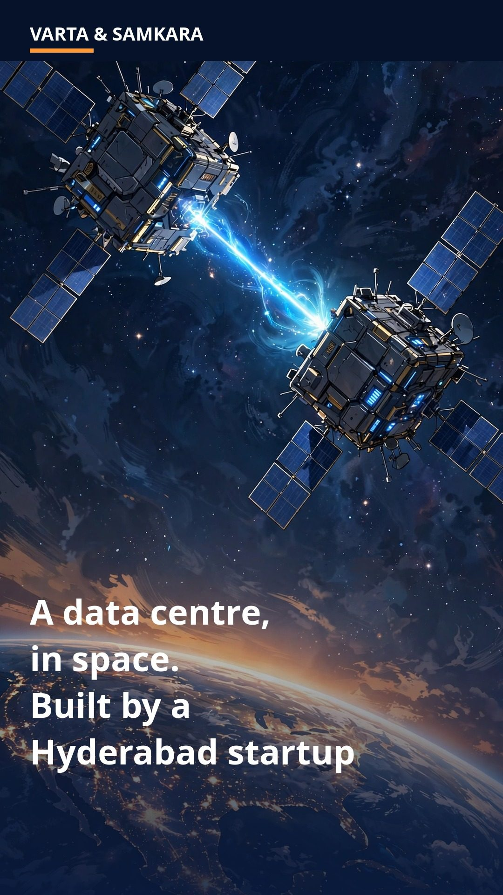
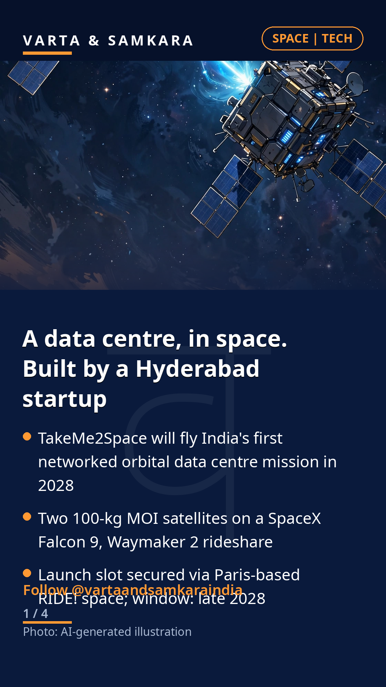
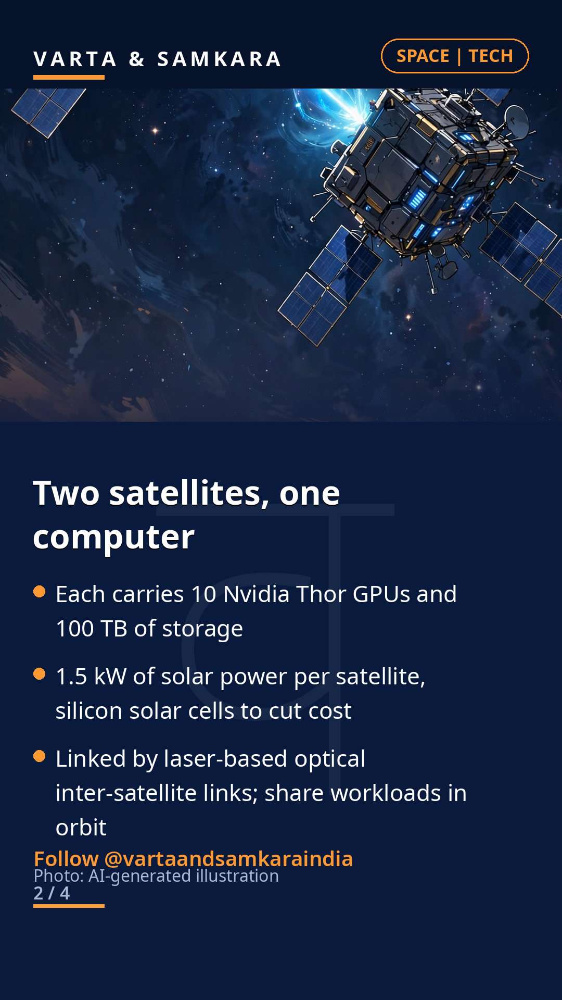
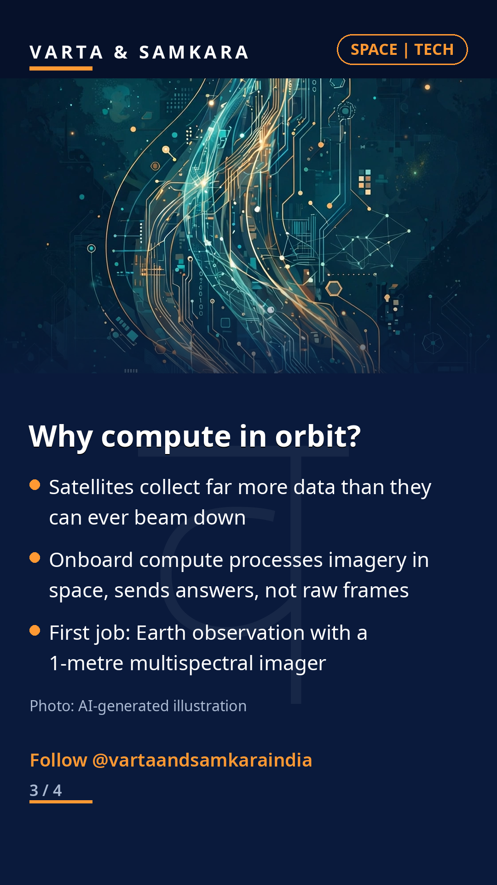
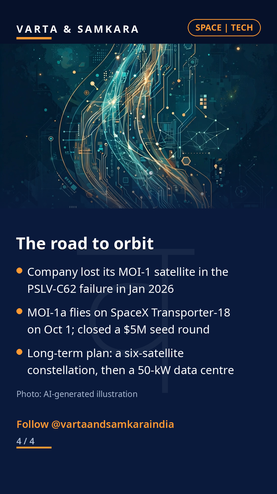

A data centre, in space. And it is being built by a Hyderabad startup.

A data centre, in space. And it is being built by a Hyderabad startup. Hyderabad-based TakeMe2Space will fly India's first networked orbital data centre mission on a SpaceX Falcon 9 in late 2028, under the Waymaker 2 rideshare mission.
Two 100-kg MOI satellites will work as one distributed computer. Each carries 10 Nvidia Thor GPUs, 100 TB of storage and 1.5 kW of solar power, and the pair will share workloads over laser-based optical links between them.
The logic is simple: a satellite collects far more data than it can beam down, so processing imagery in orbit sends answers, not raw frames. The first job is Earth observation with a 1-metre multispectral imager.
Setbacks and the road ahead
The company lost its MOI-1 satellite in the PSLV-C62 failure in January 2026. Its replacement, MOI-1a, flies on SpaceX's Transporter-18 mission on October 1. The long-term plan is a six-satellite constellation.
If it works, the mission would put India among the first countries to operate a true distributed computer in orbit, a market where the company is betting that in-space processing becomes as routine as cloud computing is on the ground.
In pictures




Source: Business Standard, GKToday, The Hindu BusinessLine
Visuals: AI-generated illustration
Visuals: AI-generated stylized space illustrations (labeled as such)
#India#News#CurrentAffairs#TechNews#Space#SpaceTech#DataCentre#ScienceAndTechnology#IndianSpace#StartupIndia#MakeInIndia#Hyderabad
See the original reel / carousel with motion graphics on Instagram.
View on Instagram